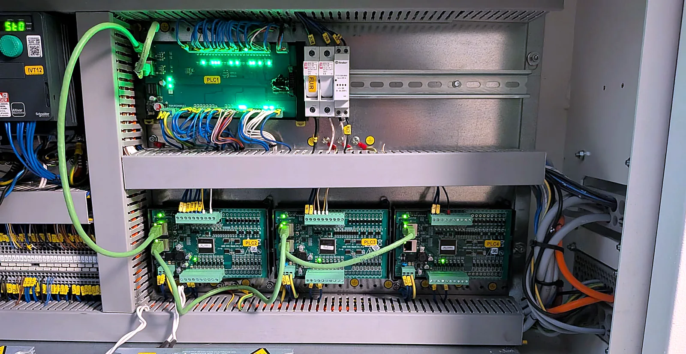
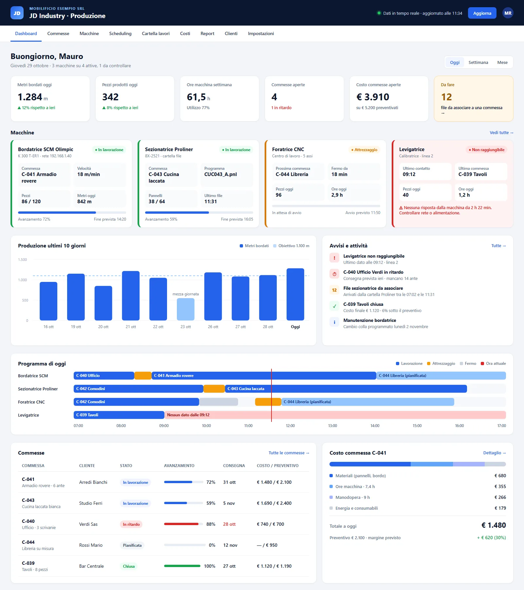

Maschinen und Steuerungen anbinden
Produktionsdaten aus SPS-/PLC- und CNC-Anlagen erfassen: Status, Alarme, Zyklen, Betriebszeiten und Auftragsbezug – abhängig von den vorhandenen Schnittstellen.
Systemintegration für KMU · Zürich & Winterthur
Ihre Maschinen laufen. Ihre Software auch. Aber die Daten dazwischen fehlen? JDEVPRO verbindet SPS-/PLC-Steuerungen, CNC, Produktionssysteme und ERP – mit bestehenden Schnittstellen, sauberem Datenaustausch und nachvollziehbaren Tests.
Für Unternehmen im Grossraum Zürich · Remote und vor Ort nach Vereinbarung
Wo wir konkret helfen
Für Produktionsbetriebe, Maschinenbauer und technisch anspruchsvolle KMU, die vorhandene Systeme weiter nutzen möchten.
Produktionsdaten aus SPS-/PLC- und CNC-Anlagen erfassen: Status, Alarme, Zyklen, Betriebszeiten und Auftragsbezug – abhängig von den vorhandenen Schnittstellen.
Auftragsdaten, Maschineninformationen und bestehende Anwendungen zusammenführen. Mit APIs, Datenbankanbindungen oder individuell entwickelten Schnittstellen.
Dashboards, Produktionsübersichten und Berichte für die tägliche Arbeit. Mit klar definierten Datenquellen statt isolierten Excel-Listen.
Wir prüfen zuerst, was Ihre Maschinen und Programme bereits können. Erst danach definieren wir den sinnvollen Integrationsumfang – statt vorschnell ein komplettes System zu ersetzen.
Dokumentierte technische Arbeiten
Zwei reale Beispiele aus JDEVPRO-Projekten. Sie zeigen technische Möglichkeiten und sind keine garantierten Resultate für andere Anlagen.

Maschinenzustand und Alarme erfassen, Fertigungsaufträge mit der Maschine verknüpfen, Produktionsdaten automatisch übernehmen und Auftragskosten aus realen Bearbeitungsdaten ableiten.
Fallstudie auf Italienisch ansehen ↗
Mehrere Maschinen in einer Übersicht, Arbeitsdateien und auftragsbezogene Ereignisse austauschen, Material- und Reststückverwaltung mit Produktionsauswertungen verbinden.
Fallstudie auf Italienisch ansehen ↗Markennamen dienen der Beschreibung integrierter Technologien, nicht als Hinweis auf Herstellerpartnerschaften. Die Referenzen sind nicht als Schweizer Kundenprojekte ausgewiesen.
So starten wir
Technisch nachvollziehbar und mit klar definierten Verantwortlichkeiten.
Maschinen, Steuerungen, Software und den gewünschten Datenfluss erfassen.
Verfügbare Schnittstellen prüfen und offene Punkte transparent benennen.
Umfang abstimmen, Schnittstellen entwickeln und mit realen Daten testen.
Funktionen abnehmen, Verbindung dokumentieren und Betreuung vereinbaren.
Für den Wirtschaftsraum Zürich
Für Betriebe im Raum Zürich bieten wir technische Vorprüfungen und Softwareintegration mit einem klaren Ansprechpartner. Remote ist vieles möglich; ob ein Termin vor Ort sinnvoll ist, klären wir projektbezogen.
Transparenter Standort: JDEVPRO ist ein italienisches Unternehmen, keine Niederlassung in Zürich. Arbeiten vor Ort und allfällige lokal zugelassene Fachpartner werden vorab abgestimmt.
Häufig gefragt
Nein. Wir prüfen zuerst die vorhandene Software und ihre Schnittstellen. Wenn eine Anbindung technisch möglich ist, kann das bestehende ERP oder MES weiter genutzt werden.
Unter Umständen ja. Entscheidend sind Modell, Steuerung, vorhandene Schnittstellen und benötigte Signale. Serielle Verbindungen oder zusätzliche Sensoren können infrage kommen.
JDEVPRO hat seinen Sitz in Italien. Integrationen und Abklärungen können remote erfolgen. Einsätze vor Ort im Raum Zürich sind nach gesonderter Vereinbarung und Prüfung der Voraussetzungen möglich.
Hersteller und Modell der Maschine, Steuerungstyp, vorhandene Software und ein kurzer Beschrieb, welche Daten übertragen werden sollen.
Technische Anfrage
Beschreiben Sie Ihre Maschine, Ihr ERP oder den fehlenden Datenfluss. Wir klären die nächsten technischen Fragen und besprechen, ob eine Integration sinnvoll ist.
info@jdevpro.it ↗Kein Schweizer Firmensitz. Keine pauschalen Zusagen zu Preisen, Fristen oder Vor-Ort-Verfügbarkeit ohne technische Prüfung.